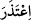
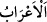

(geri kalmak için) senden izin isterler. Geri kalan kadınlarla beraber oturmaya râzı
oldular. Allah da onların kalplerini mühürledi; artık onlar bilmezler.
94. Geri dönüp onların yanına geldiğiniz zaman size özür beyan ederler. De ki:
“Hiç özür dilemeyin, size asla inanmayız! Çünkü Allah bize sizin haberlerinizden
birçok şey bildirdi. Yaptığınızı Allah da görecek, Rasûlü de. Sonra görülmeyeni ve
görüleni bilenin huzuruna döndürüleceksiniz, O size yaptıklarınızı haber verecek.
95. Siz yanlarına geldiğiniz zaman kendilerinden vazgeçesiniz diye Allah’a yemin
edecekler. Onlardan vazgeçin, çünkü onlar murdardır. Kazandıkları şeylerin cezâsı
olarak varacakları yer de cehennemdir.
96. Size yemin ediyorlar ki kendilerinden râzı olasınız. Siz onlardan râzı olsanız
bile Allah, fâsık topluluktan râzı olmaz.
“Özür bahane eden bedevî Araplar, kendilerine izin verilmesi için geldiler.”
“__WORD__”, bir işte tembellik etmek, gevşeklik göstermek, gayret sarfetmemek
mânâsına gelir. Asıl mânâsı, kişinin bir konuda mazereti olmadığı halde, mâzereti
olduğu vehmini vermesidir. Bu izaha göre “el-muazzirûn” kelimesi, “tef‘îl” babından
ism-i fâildir.
Ya da “__WORD__” fiilinden alınmadır ki bu durumda, “tâ” harfi “zâl” harfine idğam
edilmiş ve harekesi de “ayn” harfine nakledilmiş olur. “Özür hazırladı” anlamına gelir.
Bu takdirde “mu’azzirûn” kelimesi “iftiâl” babından ism-i fâil olur. Özür beyan etmek
(i’tizâr) ise bazen yalandan olur bazen de gerçek olur. Çünkü özür beyan etmek demek,
özür beyan eden kimsenin gerçekten özrü olsun veya olmasın, mutlak olarak, bir şeyi
özür şeklinde ortaya koyması demektir.
“__WORD__”, çölde yaşayan Araplar demektir. Kelimenin tekili yoktur. “Arap” ise,
“acem” (Arap olmayan milletler) kelimesinin karşıt anlamlısıdır ve “şehirde
yaşayanlar” demektir. Veya bu kelime şehir ve çölde yaşayan Arapların tamamı için
kullanılır. “Arabe” ise Medine yakınında bir nahiyenin ismidir. Kureyş kabilesi
Arabe’ye yerleşmiş ve bu yüzden de Araplar buraya nisbet edilmişlerdir. Burası
Arapların sahası Ebü’l-Fesâha ise İsmâîl (a.s.)’ın sahasıdır. Kâmûs’ta bu şekilde
açıklanır.
“Özür bahane edenler”den maksat, Esed ve Gatafân kabileleridir. Bunlar, Tebük
gazvesine çıkılırken geçim sıkıntısını ve çoluk çocuklarının çok olmasını mazeret
göstererek savaştan geri kalmak için izin istemişlerdi. Ya da bunlardan maksat, Âmir b.
Tufeyl’in adamlarıdır. Onlar: “Eğer biz seninle beraber savaşırsak, Tay (kabilesinin)
bedevileri âilelerimize ve hayvanlarımıza baskın yapar.” demişler, bunun üzerine
Peygamber (a.s.): “Allah, beni size muhtaç bırakmayacaktır.”[238] buyurmuşlardı.
“Özür ileri sürenlerin yapmacıktan mı yoksa gerçekten mi özür beyan ettikleri
konusunda âlimler farklı görüşler öne sürmüşlerdir. Âyetin zâhirine göre onlar